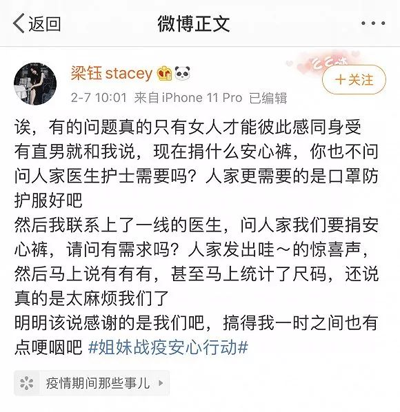
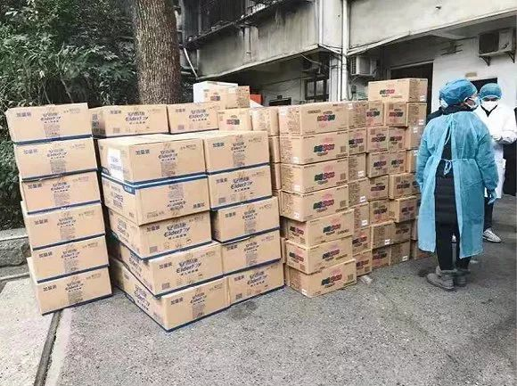

火神山医院背后的“战疫密码”
原文链接 备份链接 *************▲*************2月4日，医护人员将患者转运至武汉火神山医院病房。 （新华社记者 肖艺九/图） 全文共7126字，阅读大约需要14分钟。 火神山医院从开工到交付使用，只用了大 …
来源：图虫
记者：卢奕贝 编辑：昝慧昉
“
上海市妇联曾从战斗在疫情最前线的医疗卫生机构获悉，医生中有50%以上为女性，一线女护士更超过90%。
”
防护服穿脱一次就作废，为了节省物资，武汉战疫一线的医生护士只能连续七八个小时不上厕所，不是“憋着”就是靠纸尿裤应急。对女性医护来说，如果遭遇了生理期，也只能硬着头皮顶住。
一位武汉女医生告诉界面新闻，由于防护服穿脱不便，更换卫生用品成了无奈的尴尬。在这种情况下，只有用纸尿裤代替，在进入隔离区4到6小时后，趁更换防护服的时候一起更换。
武汉三医院的宣传科负责人也对界面新闻表示，该医院的护士四小时排一个班，如果在月经期或上厕所会使用纸尿裤。此外，有些患者也有这方面的需要。新冠肺炎有时会导致拉肚子，且有许多女性患者在医院住着，没有办法买到卫生巾。好在目前已有爱心人士向该医院捐助了成人纸尿裤以及安心裤。
不过，并不是所有医护人员或病患都能用上纸尿裤这类物资的，多位武汉一线医护对界面新闻表示，这种物资会优先给特殊人群在特殊时期使用。
连纸尿裤都紧缺，更不用说卫生巾。那么女性医护人员遇上生理期怎么办？为什么好像没怎么听说这类求助信息？
微博博主@梁钰Stacey也有这样的担忧，2月7日，她发布博文表示想要向女性医护人员捐助卫生巾与安心裤，向网友征求意见。在许多人留言讨论可行性的同时，也有人发出质疑，“现在捐什么安心裤，人家医生护士有需要吗？人家更需要的是口罩防护服好吧”。
然而需求的确存在，而且缺口很大。
不止女性医护人员，女性病患也非常需要生理期用品。在@梁钰Stacey的微博下，有多位女性医护留言，称生理期真的很麻烦，忍着生理痛还要继续坚守岗位，连卫生用品都没有，向护士长申请了两天都没发下来；也有女性肺炎患者求助，需要安心裤这种不用频繁更换的生理期用品，称长时间躺着输液，连站起来去厕所的力气都没有了，更别提更换卫生巾。
关注到这方面需求的人和机构也在增多。
博主@梁钰Stacey自2月7号开始，发起了一个“姐妹战役安心行动”，与相关慈善基金会合作，为前线的女性医护人员的生理健康提供物资保障。
当她询问有无需求的一线医生，表示想捐献安心裤时，很快有人发出“哇~”的惊喜声，回应“有有有”。甚至，求助的医护人员不止是湖北省的，河南的医院也有向她求助卫生巾、安心裤支援的。

博主@梁钰Stacey微博截图。
上海市妇联曾从战斗在疫情最前线的医疗卫生机构获悉，医生中有50%以上为女性，一线女护士更超过90%。这也意味着，前线过半的医护人员都有可能有生理期用品的需求。
然而，在防疫物资紧缺的武汉，女性生理期用品的重要程度，与防护服、口罩等保护生命安全的物资是完全不能相比的。抗疫前线的每分每秒都很紧张，医护人员在盘点物资时，只能紧着最多人需要的调取。
注意到相关需求，1月31日，上海市妇联等女性社会组织发出募集安心裤等相关物资和资金的倡议书，所有募捐物品将捐赠给上海赴武汉医疗队女性工作人员，市公共卫生临床中心、市疾控中心一线女性医务人员，以及市110个发热门诊一线女性医务人员。至2月2日下午，在各方的大力支持和广泛参与下，考拉裤（裤型卫生巾）的募集总数达10.94万片，募集资金47.76万元。
天猫平台上的多位爱心商家也紧急捐赠了近40万片成人纸尿裤、安心裤，相关公关负责人对界面新闻表示，第一批物资已于2月10出发，将送到大学人民医院、天佑医院，同济医院，武汉市汉口医院、武汉五院等8家医院。

爱心物资正在配送。来源：阿里巴巴
卫生巾生产商也行动起来，主动捐出了库存。
宝洁公司对界面新闻表示，2月1日，宝洁注意到成人纸尿裤和裤型卫生巾成为一线女性医护人员的必需品。到2月7日，公司旗下护舒宝品牌已陆续通过中国青基会、壹基金，向上海医疗队及其援助医院捐助了650箱成人裤，也为湖北武汉、随州6所医院以及北大援鄂医疗队捐献了1000箱成人裤以及考拉裤（裤型卫生巾）。
宝洁大中华区副总裁许有杰对界面新闻表示， 目前650箱成人纸尿裤已顺利送到华山医院、中山医院和黄冈医院。

宝洁捐献物资。来源：宝洁公司提供
博主@梁钰Stacey的“姐妹战役安心行动”也在继续。至2月10日，共有5个品牌3个团体，捐赠安心裤3317箱、女士一次性内裤3120条、卫生巾2880片，护手霜700支，至武汉、黄冈、孝感、鄂州等26家医院。
界面新闻联系上Stacey时，她说自己和其余志愿者每个人都已进入战时状态，真的非常忙。自2月7日至今的4天里，Stacey只睡了11个小时，瘦了4斤。
她曾在微博上写道，捐赠安心裤不应该是我在劳心劳力，也不该是任何社会组织慈善基金，这本就应该划进“战时状态”的统一采购分派的必需物资，个人和其他机构的能力太有限了。不仅此次医护人员需要，还有女警察、女消防员、女军人等等。她希望这次的关注，能让女性工作者的生理期用品成为一个被合理重视的问题。
未经授权 禁止转载

原文链接 备份链接 *************▲*************2月4日，医护人员将患者转运至武汉火神山医院病房。 （新华社记者 肖艺九/图） 全文共7126字，阅读大约需要14分钟。 火神山医院从开工到交付使用，只用了大 …
原文链接 备份链接 经济观察网 记者 瞿依贤 湖北省第三人民医院呼吸内科医生胡晟在除夕这天拿到了自己的CT片子：双肺几乎全白。他科室的同事看到结果，好几个都哭了。 胡晟是在发热门诊被感染的。湖北省第三人民医院在1月8日开设发热门诊，他从呼 …
原文链接 备份链接 我也是个普通人，也会恐惧。但我是一名医务工作者，同时是一名党员；我们黄冈的疫情是全国城市里除武汉之外最重的几个之一，这样的困难情况下，我们不去，谁去？必须要坚持，一定要挺住。 口述 | 陈 林 整理 | 王 煜 我是湖 …
原文链接 备份链接 澎湃新闻记者 陈雷柱 通讯员 黄启秀 除夕之夜，空军军医大学子弟兵千里驰援武汉，半个多月过去了，这个特殊的春节已经过完，他们昼夜奋战一线，留下的，除了病房里忙碌的身影，还有，属于他们内心“自留地”的朋友圈。 澎湃新 …
原文链接 备份链接 澎湃新闻记者 赵思维 廖艳 薛莎莎 2月11日16时许，武汉武昌方舱医院首批28名新冠肺炎患者康复出院。澎湃新闻（www.thepaper.cn）记者现场看到，来自不同街道办和社区的工作人员提前来到等候区，举牌等患者出 …